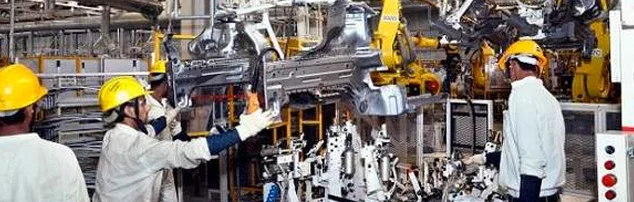

Cursos de Eletromecanica e Engenharia Mecânica
O curso de Engenharia Mecânica forma profissionais capazes de executar procedimentos que envolvam projeto, fabricação, operação e manutenção de máquinas, equipamentos e sistemas mecânicos. No mercado de trabalho, o engenheiro mecânico atua em diversas indústrias, entre elas a de automóveis, aeronáutica e naval. O graduado na área também está em empresas do setor de energia, de consultoria de projetos industriais, em universidades e centros de pesquisas Esse profissional precisa dominar ao menos uma língua estrangeira, saber trabalhar em equipe, ter raciocínio rápido e conhecimentos sólidos nas Ciências Exatas
Amortecedores
.jpeg)
A suspensão do carro é um dos mais importantes sistemas para o bom desempenho, segurança e conforto durante uma viagem. Ela é constituída basicamente por molas, braços e amortecedores que ligam o chassi às rodas do carro.Esses componentes são os responsáveis por intermediar a transmissão de movimento oscilatório, garantindo estabilidade e conforto para o motorista e para os passageiros. Para ajudá-lo a entender um pouco mais sobre essa parte tão importante do seu carro, criamos esse dossiê sobre amortecedores. Aqui, você vai encontrar informações relevantes sobre o funcionamento, importância do componente para o veículo, maneiras de identificar defeitos e os riscos que essas imperfeições podem gerar ao seu carro.
Hidraúlica
.jpeg)
O curso de Hidráulica Aplicada tem como objetivo focar os mecanismos dos escoamentos por condutos forçados, gravidade e recalque (por bombeamento), além dos escoamentos livres em dutos e canais. O equacionamento teórico e experimental é fundamental na solução de problemas hidráulicos, principalmente no setor de saneamento básico, no qual a aplicação desses conceitos é fundamental. Objetivo O objetivo geral do curso é fornecer ao aluno conhecimentos fundamentais para que ele possa entender, projetar e resolver problemas técnicos referentes aos escoamentos livres e forçados. Esse conhecimento possibilitará a solução de problemas referentes aos sistemas de abastecimento público e predial de água, sistemas de combate a incêndios por hidrantes, sistemas de coleta e transporte de esgotos sanitários, sistemas de drenagem urbana, estudo de canais, sistemas de irrigação, entre outros. Dentre os objetivos específicos podem ser citados: Conhecimento das diferenças entre escoamentos forçados e livres Conhecimento das grandezas envolvidas nos sistemas citados Conhecimento das formulações envolvidas para cálculo dos condutos livres e forçados Análise das pressões envolvidas em condutos forçados Restrições de uso das formulações.